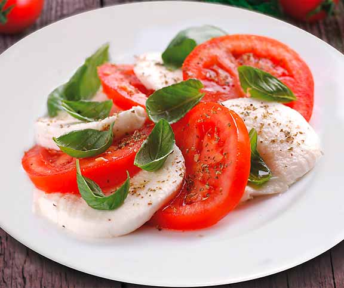

Salade de Tomates et Mozzarella
Difficultée :
Facile
Ingrédients :
- 3 tomates mûres
- 1 boule de mozzarella
- Feuilles de basilic frais
- 2 cuillères à soupe d'huile d'olive
- 1 cuillère à soupe de vinaigre balsamique
- Sel et poivre au goût
Préparation :
- Lavez les tomates et coupez-les en tranches.
- Coupez la mozzarella en tranches.
- Disposez les tranches de tomates et de mozzarella sur une assiette en alternance.
- Répartissez les feuilles de basilic frais sur le dessus.
- Dans un petit bol, mélangez l'huile d'olive, le vinaigre balsamique, le sel et le poivre.
Versez cette vinaigrette sur la salade.
- Servez immédiatement et dégustez !

Informations Nutritionnelles :
Portion : 1 assiette
- Calories : 250
- Protéines : 12 g
- Glucides : 8 g
- Lipides : 20 g
- Fibres : 3 g
Retour à la page des recettes